本文介绍操作系统I/O工作原理，I/O设计，基本使用，开源项目中实现高性能I/O常见方法和实现，彻底搞懂高性能I/O之道。
基础概念
在介绍I/O原理之前，先重温几个基础概念：
操作系统与内核
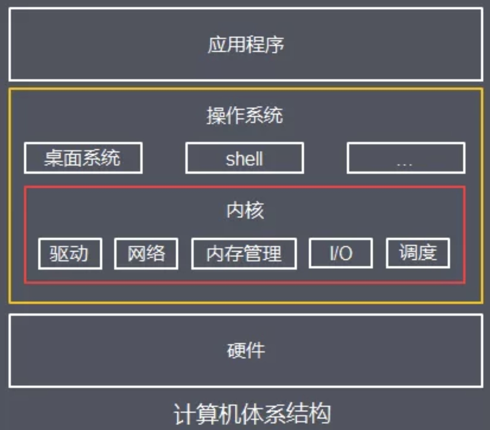
操作系统：管理计算机硬件与软件资源的系统软件内核：操作系统的核心软件，负责管理系统的进程、内存、设备驱动程序、文件和网络系统等等，为应用程序提供对计算机硬件的安全访问服务
内核空间和用户空间
为了避免用户进程直接操作内核，保证内核安全，操作系统将内存寻址空间划分为两部分：内核空间（Kernel-space），供内核程序使用; 用户空间（User-space），供用户进程使用 为了安全，内核空间和用户空间是隔离的，即使用户的程序崩溃了，内核也不受影响
数据流
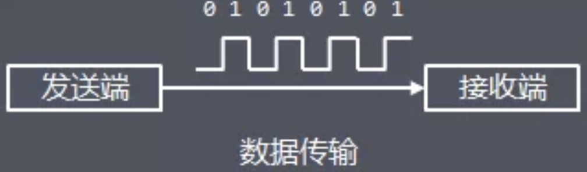
计算机中的数据是基于随着时间变换高低电压信号传输的，这些数据信号连续不断，有着固定的传输方向，类似水管中水的流动，因此抽象数据流(I/O流)的概念：指一组有顺序的、有起点和终点的字节集合，
抽象出数据流的作用：实现程序逻辑与底层硬件解耦，通过引入数据流作为程序与硬件设备之间的抽象层，面向通用的数据流输入输出接口编程，而不是具体硬件特性，程序和底层硬件可以独立灵活替换和扩展
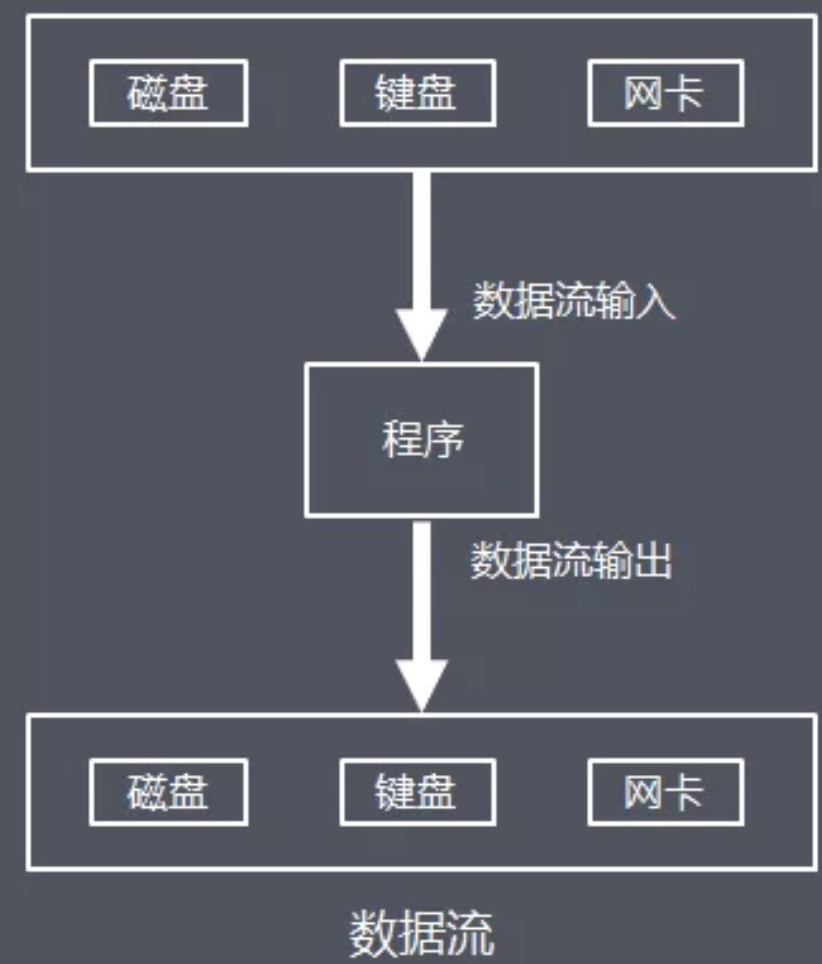
I/O 工作原理
磁盘I/O
典型I/O读写磁盘工作原理如下：
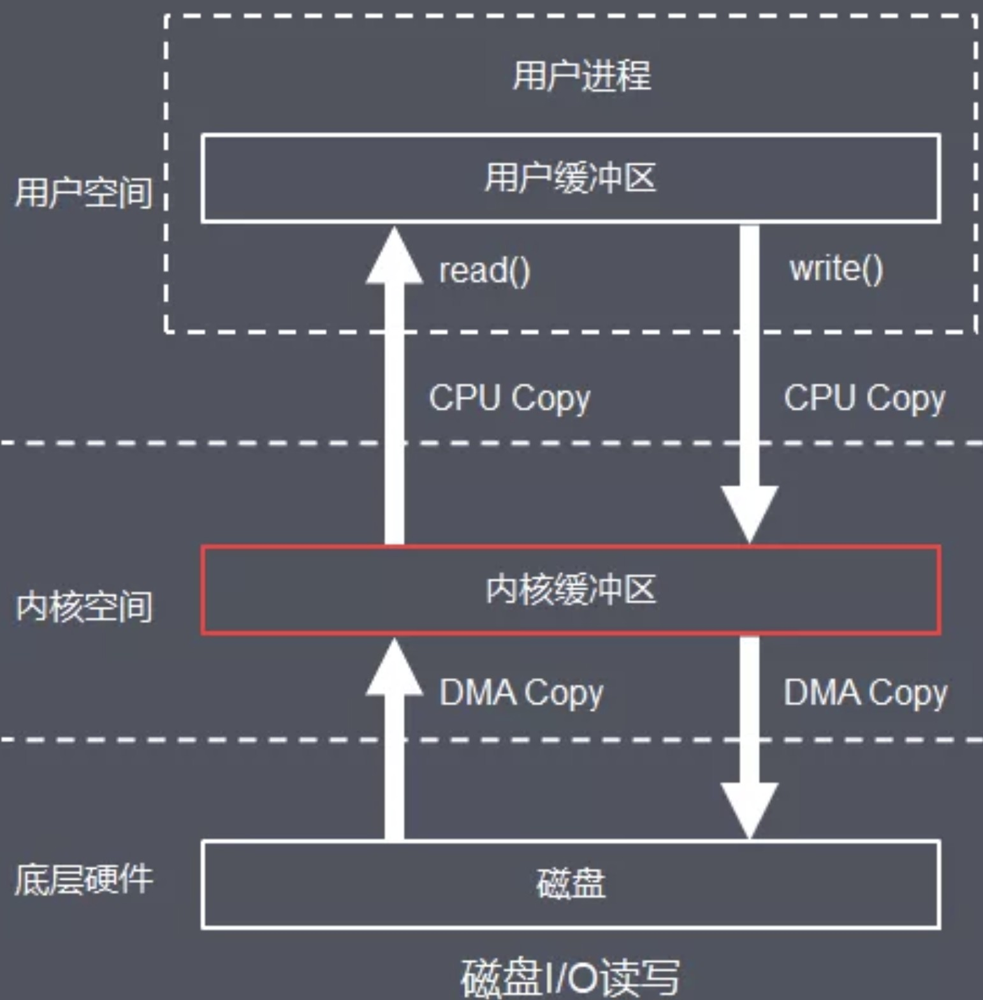
tips: DMA：全称叫直接内存存取（Direct Memory Access），是一种允许外围设备（硬件子系统）直接访问系统主内存的机制。基于 DMA 访问方式，系统主内存与硬件设备的数据传输可以省去CPU 的全程调度
值得注意的是：
- 读写操作基于系统调用实现
- 读写操作经过用户缓冲区，内核缓冲区，应用进程并不能直接操作磁盘
- 应用进程读操作时需阻塞直到读取到数据
网络I/O
这里先以最经典的阻塞式I/O模型介绍：
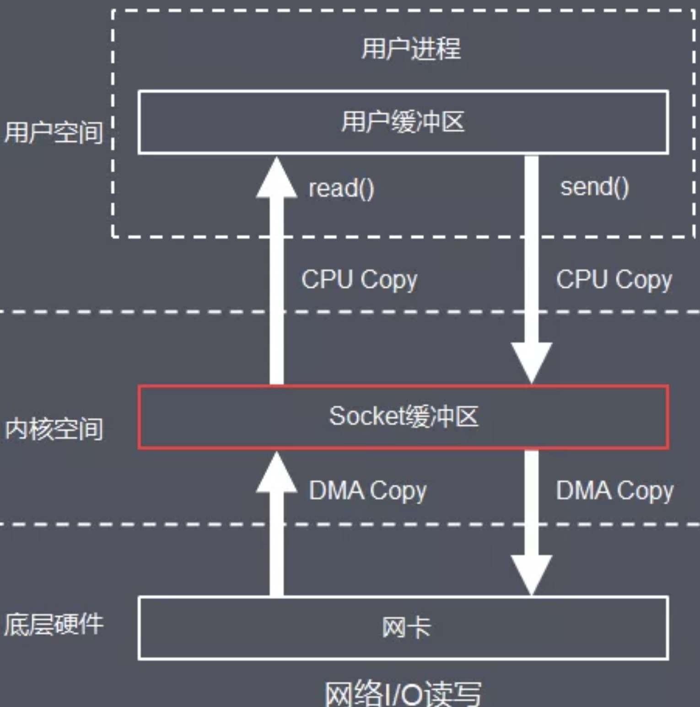
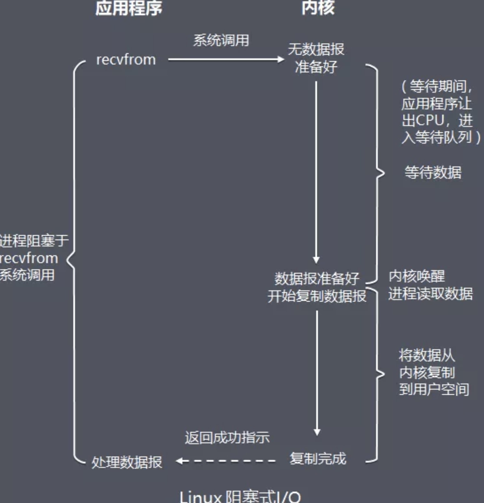
tips:recvfrom，经socket接收数据的函数
值得注意的是：
- 网络I/O读写操作经过用户缓冲区，Sokcet缓冲区
- 服务端线程在从调用recvfrom开始到它返回有数据报准备好这段时间是阻塞的，recvfrom返回成功后，线程开始处理数据报
Java I/O设计
I/O分类
Java中对数据流进行具体化和实现，关于Java数据流一般关注以下几个点：
- 流的方向从外部到程序，称为输入流；从程序到外部，称为输出流
- 流的数据单位程序以字节作为最小读写数据单元，称为字节流，以字符作为最小读写数据单元，称为字符流
- 流的功能角色
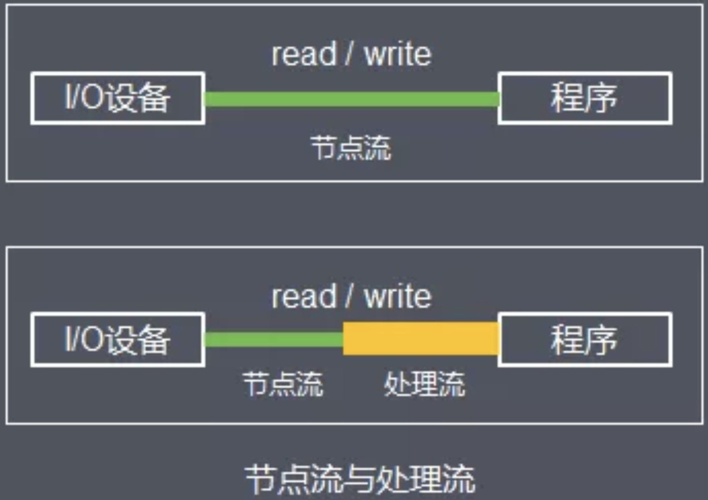
从/向一个特定的IO设备（如磁盘，网络）或者存储对象(如内存数组)读/写数据的流，称为节点流；
对一个已有流进行连接和封装，通过封装后的流来实现数据的读/写功能，称为处理流(或称为过滤流)；
I/O操作接口
java.io包下有一堆I/O操作类，初学时看了容易搞不懂，其实仔细观察其中还是有规律：这些I/O操作类都是在继承4个基本抽象流的基础上，要么是节点流，要么是处理流
四个基本抽象流
java.io包中包含了流式I/O所需要的所有类，java.io包中有四个基本抽象流，分别处理字节流和字符流：
- InputStream
- OutputStream
- Reader
- Writer
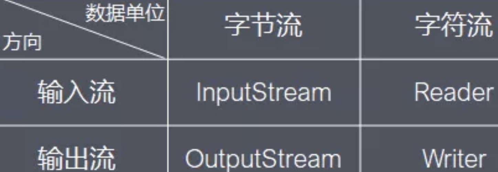
节点流
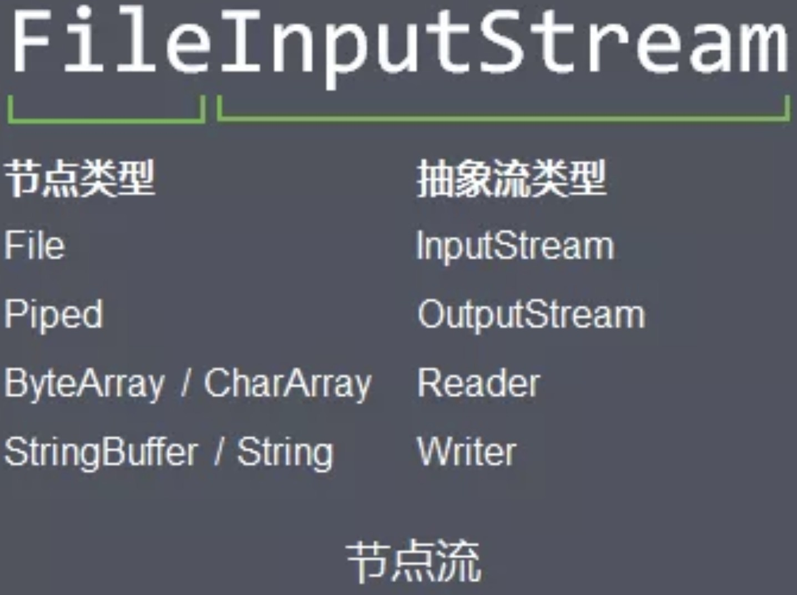
节点流I/O类名由节点流类型 + 抽象流类型组成，常见节点类型有：
- File文件
- Piped 进程内线程通信管道
- ByteArray / CharArray (字节数组 / 字符数组)
- StringBuffer / String (字符串缓冲区 / 字符串)
节点流的创建通常是在构造函数传入数据源，例如：
|
|
处理流
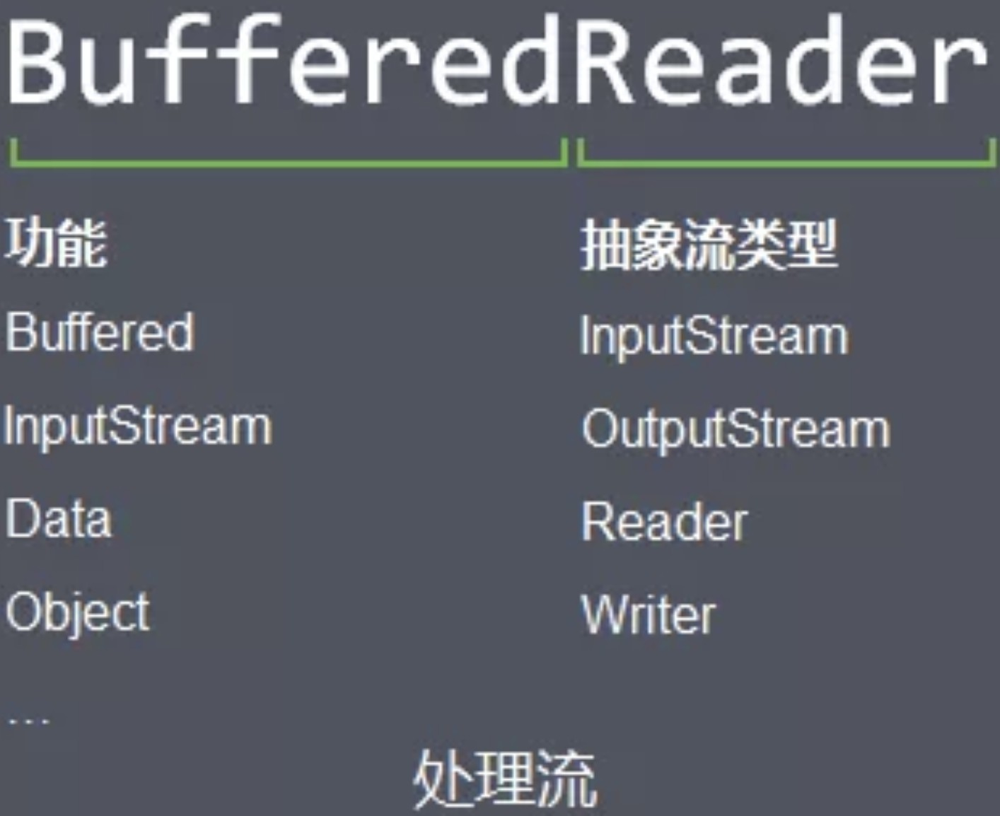
处理流I/O类名由对已有流封装的功能 + 抽象流类型组成，常见功能有：
- 缓冲：对节点流读写的数据提供了缓冲的功能，数据可以基于缓冲批量读写，提高效率。常见有BufferedInputStream、BufferedOutputStream
- 字节流转换为字符流：由InputStreamReader、OutputStreamWriter实现
- 字节流与基本类型数据相互转换：这里基本数据类型数据如int、long、short，由DataInputStream、DataOutputStream实现
- 字节流与对象实例相互转换：用于实现对象序列化，由ObjectInputStream、ObjectOutputStream实现
处理流的应用了适配器/装饰模式，转换/扩展已有流，处理流的创建通常是在构造函数传入已有的节点流或处理流：
|
|
Java NIO
标准I/O存在问题
Java NIO(New I/O)是一个可以替代标准Java I/O API的IO API(从Java 1.4开始)，Java NIO提供了与标准I/O不同的I/O工作方式，目的是为了解决标准 I/O存在的以下问题：
数据多次拷贝
标准I/O处理，完成一次完整的数据读写，至少需要从底层硬件读到内核空间，再读到用户文件，又从用户空间写入内核空间，再写入底层硬件
此外，底层通过write、read等函数进行I/O系统调用时，需要传入数据所在缓冲区起始地址和长度由于JVM GC的存在，导致对象在堆中的位置往往会发生移动，移动后传入系统函数的地址参数就不是真正的缓冲区地址了
可能导致读写出错，为了解决上面的问题，使用标准I/O进行系统调用时，还会额外导致一次数据拷贝：把数据从JVM的堆内拷贝到堆外的连续空间内存(堆外内存)
所以总共经历6次数据拷贝，执行效率较低
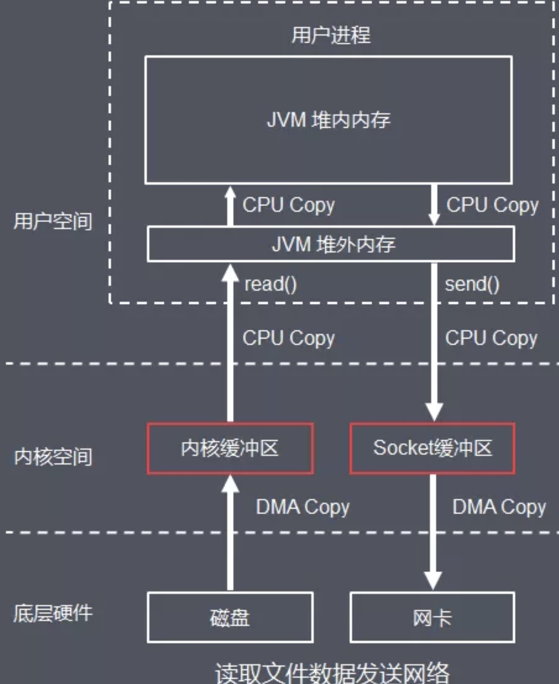
操作阻塞
传统的网络I/O处理中，由于请求建立连接(connect)，读取网络I/O数据(read)，发送数据(send)等操作是线程阻塞的
|
|
以上面服务端程序为例，当请求连接已建立，读取请求消息，服务端调用read方法时，客户端数据可能还没就绪(例如客户端数据还在写入中或者传输中)，线程需要在read方法阻塞等待直到数据就绪
为了实现服务端并发响应，每个连接需要独立的线程单独处理，当并发请求量大时为了维护连接，内存、线程切换开销过大
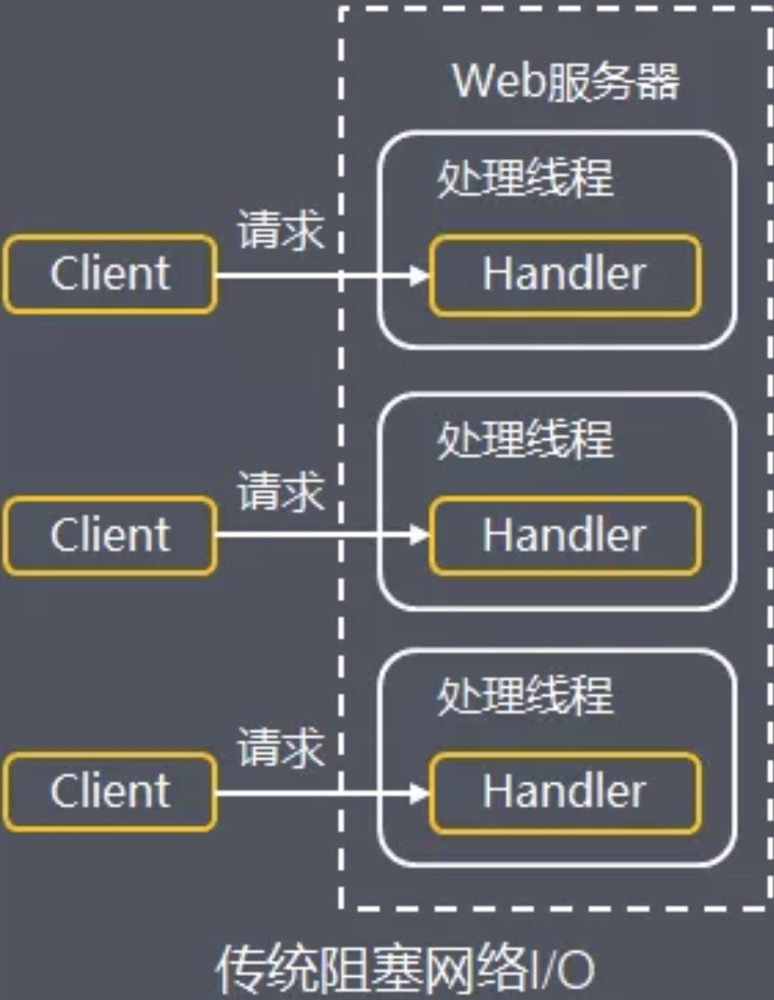
Buffer
Java NIO核心三大核心组件是Buffer(缓冲区)、Channel(通道)、Selector
Buffer提供了常用于I/O操作的字节缓冲区，常见的缓存区有ByteBuffer, CharBuffer, DoubleBuffer, FloatBuffer, IntBuffer, LongBuffer, ShortBuffer，分别对应基本数据类型: byte, char, double, float, int, long, short，下面介绍主要以最常用的ByteBuffer为例，Buffer底层支持Java堆外内存和堆内内存
堆外内存是指与堆内存相对应的，把内存对象分配在JVM堆以外的内存，这些内存直接受操作系统管理（而不是虚拟机，相比堆内内存，I/O操作中使用堆外内存的优势在于：
- 不用被JVM GC线回收，减少GC线程资源占有
- 在I/O系统调用时，直接操作堆外内存，可以节省一次堆外内存和堆内内存的复制
ByteBuffer底层基于堆外内存的分配和释放基于malloc和free函数，对外allocateDirect方法可以申请分配堆外内存，并返回继承ByteBuffer类的DirectByteBuffer对象：
堆外内存的回收基于DirectByteBuffer的成员变量Cleaner类，提供clean方法可以用于主动回收，Netty中大部分堆外内存通过记录定位Cleaner的存在，主动调用clean方法来回收；另外，当DirectByteBuffer对象被GC时，关联的堆外内存也会被回收
tips: JVM参数不建议设置-XX:+DisableExplicitGC，因为部分依赖Java NIO的框架(例如Netty)在内存异常耗尽时，会主动调用System.gc()，触发Full GC，回收DirectByteBuffer对象，作为回收堆外内存的最后保障机制，设置该参数之后会导致在该情况下堆外内存得不到清理
堆外内存基于基础ByteBuffer类的DirectByteBuffer类成员变量：Cleaner对象，这个Cleaner对象会在合适的时候执行unsafe.freeMemory(address)，从而回收这块堆外内存
Buffer可以见到理解为一组基本数据类型，存储地址连续的的数组，支持读写操作，对应读模式和写模式，通过几个变量来保存这个数据的当前位置状态：capacity、 position、 limit：
- capacity 缓冲区数组的总长度
- position 下一个要操作的数据元素的位置
- limit 缓冲区数组中不可操作的下一个元素的位置：limit <= capacity
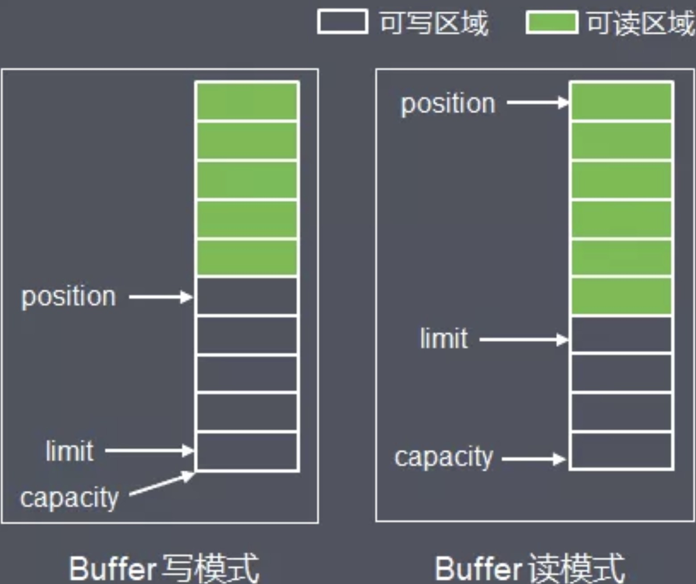
Channel
Channel(通道)的概念可以类比I/O流对象，NIO中I/O操作主要基于Channel：从Channel进行数据读取 ：创建一个缓冲区，然后请求Channel读取数据 从Channel进行数据写入 ：创建一个缓冲区，填充数据，请求Channel写入数据
Channel和流非常相似，主要有以下几点区别：
- Channel可以读和写，而标准I/O流是单向的
- Channel可以异步读写，标准I/O流需要线程阻塞等待直到读写操作完成
- Channel总是基于缓冲区Buffer读写
Java NIO中最重要的几个Channel的实现：
- FileChannel：用于文件的数据读写，基于FileChannel提供的方法能减少读写文件数据拷贝次数，后面会介绍
- DatagramChannel：用于UDP的数据读写
- SocketChannel：用于TCP的数据读写，代表客户端连接
- ServerSocketChannel: 监听TCP连接请求，每个请求会创建会一个SocketChannel，一般用于服务端
基于标准I/O中，我们第一步可能要像下面这样获取输入流，按字节把磁盘上的数据读取到程序中，再进行下一步操作，而在NIO编程中，需要先获取Channel，再进行读写
|
|
tips: FileChannel仅能运行在阻塞模式下，文件异步处理的 I/O 是在JDK 1.7 才被加入的 java.nio.channels.AsynchronousFileChannel
|
|
Selector
Selector(选择器) ，它是Java NIO核心组件中的一个，用于检查一个或多个NIO Channel（通道）的状态是否处于可读、可写。实现单线程管理多个Channel，也就是可以管理多个网络连接
Selector核心在于基于操作系统提供的I/O复用功能，单个线程可以同时监视多个连接描述符，一旦某个连接就绪（一般是读就绪或者写就绪），能够通知程序进行相应的读写操作，常见有select、poll、epoll等不同实现
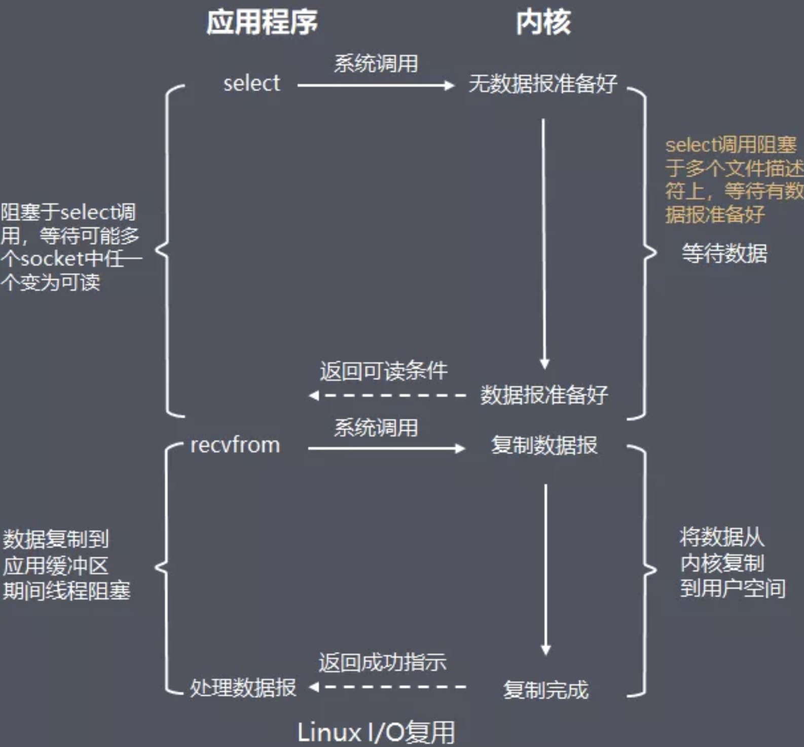
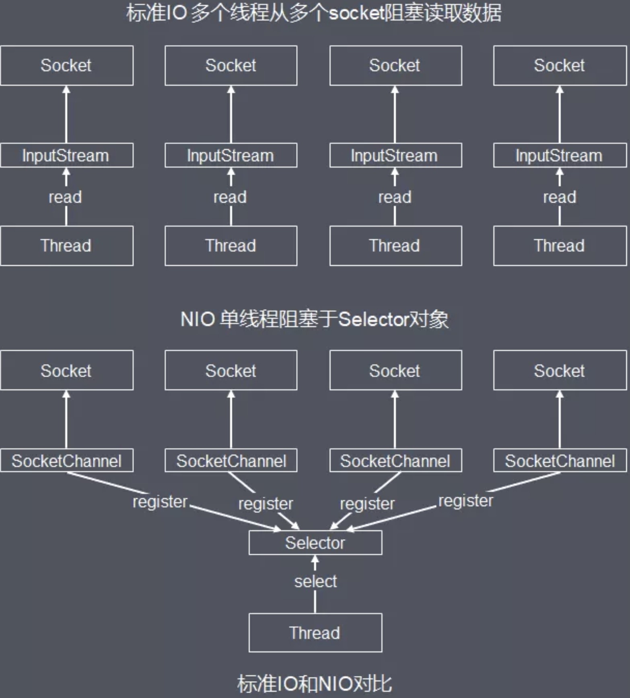
Java NIO Selector基本工作原理如下：
- 初始化Selector对象，服务端ServerSocketChannel对象
- 向Selector注册ServerSocketChannel的socket-accept事件
- 线程阻塞于selector.select.，当有客户端请求服务端，线程退出阻塞
- 基于selector获取所有就绪事件，此时先获取到socket-accept事件，向Selector注册客户端SocketChannel的数据就绪可读事件事件
- 线程再次阻塞于selector.select.，当有客户端连接数据就绪，可读
- 基于ByteBuffer读取客户端请求数据，然后写入响应数据，关闭channel
示例如下，完整可运行代码已经上传github：
|
|
tips: Java NIO基于Selector实现高性能网络I/O这块使用起来比较繁琐，使用不友好，一般业界使用基于Java NIO进行封装优化，扩展丰富功能的Netty框架来优雅实现
高性能I/O优化
下面结合业界热门开源项目介绍高性能I/O的优化
零拷贝
零拷贝(zero copy)技术，用于在数据读写中减少甚至完全避免不必要的CPU拷贝，减少内存带宽的占用，提高执行效率，零拷贝有几种不同的实现原理，下面介绍常见开源项目中零拷贝实现
Kafka零拷贝
Kafka基于Linux 2.1内核提供，并在2.4 内核改进的的sendfile函数 + 硬件提供的DMA Gather Copy实现零拷贝，将文件通过socket传送
函数通过一次系统调用完成了文件的传送，减少了原来read/write方式的模式切换。同时减少了数据的copy, sendfile的详细过程如下：
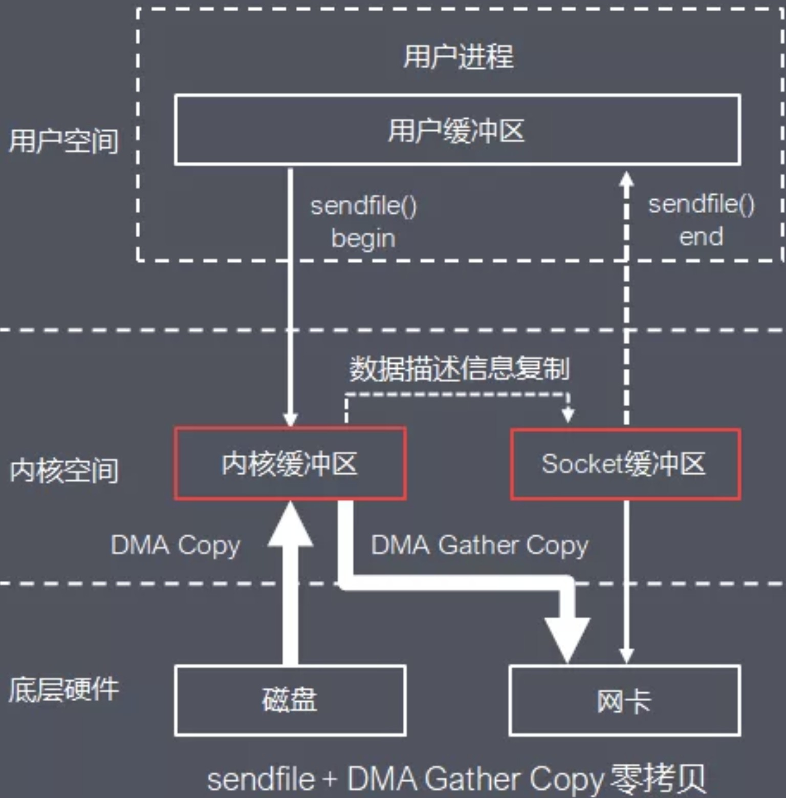
基本流程如下：
- 用户进程发起sendfile系统调用
- 内核基于DMA Copy将文件数据从磁盘拷贝到内核缓冲区
- 内核将内核缓冲区中的文件描述信息文件描述符，数据长度.拷贝到Socket缓冲区
- 内核基于Socket缓冲区中的文件描述信息和DMA硬件提供的Gather Copy功能将内核缓冲区数据复制到网卡
- 用户进程sendfile系统调用完成并返回
相比传统的I/O方式，sendfile + DMA Gather Copy方式实现的零拷贝，数据拷贝次数从4次降为2次，系统调用从2次降为1次，用户进程上下文切换次数从4次变成2次DMA Copy，大大提高处理效率
Kafka底层基于java.nio包下的FileChannel的transferTo：
transferTo将FileChannel关联的文件发送到指定channel，当Comsumer消费数据，Kafka Server基于FileChannel将文件中的消息数据发送到SocketChannel
RocketMQ零拷贝
RocketMQ基于mmap + write的方式实现零拷贝：mmap() 可以将内核中缓冲区的地址与用户空间的缓冲区进行映射，实现数据共享，省去了将数据从内核缓冲区拷贝到用户缓冲区
|
|
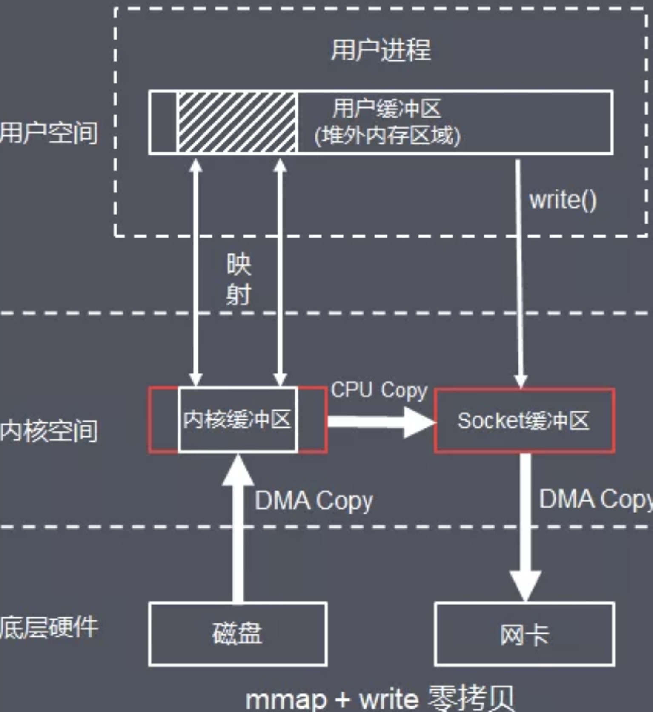
mmap + write 实现零拷贝的基本流程如下：
- 用户进程向内核发起系统mmap调用
- 将用户进程的内核空间的读缓冲区与用户空间的缓存区进行内存地址映射
- 内核基于DMA Copy将文件数据从磁盘复制到内核缓冲区
- 用户进程mmap系统调用完成并返回
- 用户进程向内核发起write系统调用
- 内核基于CPU Copy将数据从内核缓冲区拷贝到Socket缓冲区
- 内核基于DMA Copy将数据从Socket缓冲区拷贝到网卡
- 用户进程write系统调用完成并返回
RocketMQ中消息基于mmap实现存储和加载的逻辑写在org.apache.rocketmq.store.MappedFile中，内部实现基于nio提供的java.nio.MappedByteBuffer，基于FileChannel的map方法得到mmap的缓冲区：
|
|
查询CommitLog的消息时，基于mappedByteBuffer偏移量pos，数据大小size查询：
|
|
tips: transientStorePoolEnable机制Java NIO mmap的部分内存并不是常驻内存，可以被置换到交换内存(虚拟内存)，RocketMQ为了提高消息发送的性能，引入了内存锁定机制，即将最近需要操作的CommitLog文件映射到内存，并提供内存锁定功能，确保这些文件始终存在内存中，该机制的控制参数就是transientStorePoolEnable
因此，MappedFile数据保存CommitLog刷盘有2种方式：
- 开启transientStorePoolEnable：写入内存字节缓冲区(writeBuffer) -> 从内存字节缓冲区(writeBuffer)提交(commit)到文件通道(fileChannel) -> 文件通道(fileChannel) -> flush到磁盘
- 未开启transientStorePoolEnable：写入映射文件字节缓冲区(mappedByteBuffer) -> 映射文件字节缓冲区(mappedByteBuffer) -> flush到磁盘
RocketMQ 基于 mmap+write 实现零拷贝，适用于业务级消息这种小块文件的数据持久化和传输 Kafka 基于 sendfile 这种零拷贝方式，适用于系统日志消息这种高吞吐量的大块文件的数据持久化和传输
Netty零拷贝
Netty 的零拷贝分为两种：
- 基于操作系统实现的零拷贝，底层基于FileChannel的transferTo方法
- 基于Java 层操作优化，对数组缓存对象(ByteBuf )进行封装优化，通过对ByteBuf数据建立数据视图，支持ByteBuf 对象合并，切分，当底层仅保留一份数据存储，减少不必要拷贝
多路复用
Netty中对Java NIO功能封装优化之后，实现I/O多路复用代码优雅了很多：
|
|
页缓存(PageCache)
页缓存（PageCache)是操作系统对文件的缓存，用来减少对磁盘的 I/O 操作，以页为单位的，内容就是磁盘上的物理块，页缓存能帮助程序对文件进行顺序读写的速度几乎接近于内存的读写速度，主要原因就是由于OS使用PageCache机制对读写访问操作进行了性能优化：
页缓存读取策略：当进程发起一个读操作 （比如，进程发起一个 read() 系统调用），它首先会检查需要的数据是否在页缓存中：
- 如果在，则放弃访问磁盘，而直接从页缓存中读取
- 如果不在，则内核调度块 I/O 操作从磁盘去读取数据，并读入紧随其后的少数几个页面（不少于一个页面，通常是三个页面），然后将数据放入页缓存中
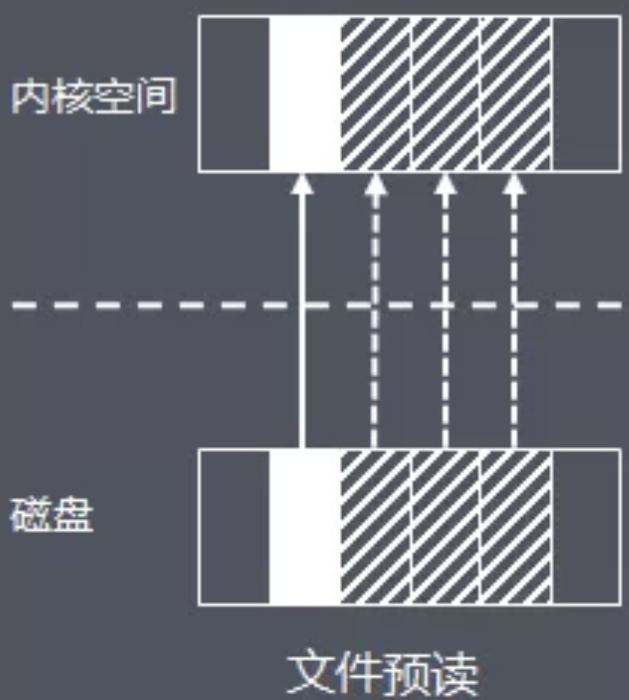
页缓存写策略：当进程发起write系统调用写数据到文件中，先写到页缓存，然后方法返回。此时数据还没有真正的保存到文件中去，Linux 仅仅将页缓存中的这一页数据标记为“脏”，并且被加入到脏页链表中
然后，由flusher 回写线程周期性将脏页链表中的页写到磁盘，让磁盘中的数据和内存中保持一致，最后清理“脏”标识。在以下三种情况下，脏页会被写回磁盘:
- 空闲内存低于一个特定阈值
- 脏页在内存中驻留超过一个特定的阈值时
- 当用户进程调用 sync() 和 fsync() 系统调用时
RocketMQ中，ConsumeQueue逻辑消费队列存储的数据较少，并且是顺序读取，在page cache机制的预读取作用下，Consume Queue文件的读性能几乎接近读内存，即使在有消息堆积情况下也不会影响性能，提供了2种消息刷盘策略：
- 同步刷盘：在消息真正持久化至磁盘后RocketMQ的Broker端才会真正返回给Producer端一个成功的ACK响应
- 异步刷盘，能充分利用操作系统的PageCache的优势，只要消息写入PageCache即可将成功的ACK返回给Producer端。消息刷盘采用后台异步线程提交的方式进行，降低了读写延迟，提高了MQ的性能和吞吐量
Kafka实现消息高性能读写也利用了页缓存，这里不再展开
参考
《深入理解Linux内核 —— Daniel P.Bovet》
Netty之Java堆外内存扫盲贴 ——江南白衣
Java NIO？看这一篇就够了！——朱小厮
RocketMQ 消息存储流程 —— Zhao Kun(赵坤)
一文理解Netty模型架构 ——caison